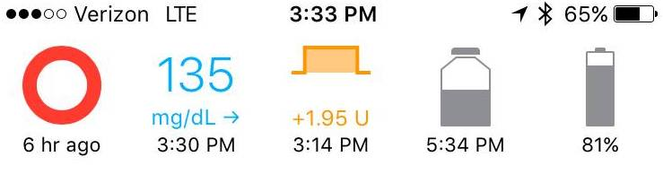

Yellow and Red Loops⌁
A properly operating Loop will remain green for 5 minutes. To stay green, there are several things that Loop must do:
- Loop obtains a BG value from your CGM source, and
- Loop reads your pump history to know about insulin deliveries and recent events, and
- Loop completes a run of its calculations based on those inputs
- Loop recommends a temp basal and sends that instruction to the pump
- Pump enacts the recommended temp basal
- Loop confirms the pump enacted the recommended temp basal
If something goes wrong in those steps and more than 5 minutes goes by, the Loop will turn yellow until it can solve the problem. If more than 15 minutes goes by and the problem still exists, Loop will turn red.
To see the latest Loop error messages, touch the yellow or red Loop Status circle on the main screen. If an error message is available, it will appear in a dialog window. Use that error message to help guide your next troubleshooting steps, as laid out in the discussion below.
A healthy green loop will have timestamps less than 5 minutes old below the green loop, BG reading, and reservoir level. This indicates that the Loop was run less than 5 minutes ago, fresh BGs have been coming in, temp basals have been enacted by the pump, and the pump is communicating with Loop. The screenshot below is a very happy Loop.

For Loopers who have already been successfully getting green loops, but suddenly find themselves with problems...we need to figure out which area your loop is failing in.
The displayed error message should help you narrow in on the cause of the red loop: Is this a CGM issue? Is this a pump issue? Is this a RileyLink/BT issue?
CGM issues⌁
Old BG data (CGM issue)
⌁If your Loop turns yellow or red, easiest to start by checking the timestamps on the BG. If the BG reading is more than 5 minutes older than your iPhone time, your Loop will not be green. The screenshot below is a good example of missing BG data preventing the Loop from staying green. The pump is still communicating (reservoir reading is only 2 minutes old)...BGs appear to be the problem.


BG troubleshooting steps:
- Verify you have enabled the correct CGM Selection in Loop settings; it is easy to accidentally change the selection while scrolling through the settings page
- For G5, verify your transmitter ID is set correctly in Loop settings
- For G4, verify the Dexcom Share app is running on your phone
- Fetch Recent Glucose command in RL only works for Medtronic CGM users, by the way...so don't expect that command to solve Dexcom CGM issues
- If your local CGM is working fine on the Dexcom app, but Loop isn't reading it:
- make sure you enter your Dexcom Share account info in the Loop settings. Loop will automatically switch to pulling from the Dexcom servers if the local reading isn't working.
- try turning Loop and Dexcom apps off, toggle BT off/on, restart Loop app, and then restart Dexcom app
Pump Issues⌁
Old Pump data (Pump Issue)
⌁If your pump reading is older than 5 minutes, but BGs are fine, then you will need to troubleshoot the pump communications. The screenshot below is a good example of missing pump data preventing the Loop from staying green. The CGM is still communicating (BG reading is only 2 minutes old)...but pump reservoir reading is older than 5 min.

Pump troubleshooting steps:
- Your pump battery may be low. Replace the battery...even if the percentage doesn't look low, this is a good starting point
- If you have an x23 or x54 model pump, make sure your mysentry is paired
- Have the pump and RL gotten too far away from each other? Try bringing them closer
- Try retuning the RL. Just a note though, the Loop has code embedded to automatically retunes RL when the pump comms are failing for 20 minutes. So, manual retuning is more about speeding things along rather than being a necessary intervention to fixing pump comms.
- Try a Send Button Press to "wake up the pump" a bit.
- Try a Fetch Pump History. Same as retuning though, the Loop has code embedded to automatically pull pump history. Manual fetching of pump history is more about speeding things along than being a necessary step to fixing pump comms.
- If you have a backup pump, try switching to that pump and see whether the issue persists.
About Pump Communications
Pump communications errors can and will happen. Just be patient, and they almost always correct themselves. Yellow loops happen sometimes, and aren't usually worth troubleshooting. Red loops are more infrequent and usually a good time to start investigating possible source. Some environments will be noisy for rf comms (such as concerts, amusement parks, tech venues, conferences with OpenAPS users in attendance, etc.), and your loop may not stay green as often as usual. Just be patient. When you leave that environment, looping will go back to normal. Wireless microphones, baby monitors, and other similar types of devices can interfer with pump communications if there are lots of competing radio devices in a tight environment. If you find you have areas of your house that consistently have poor pump communications, look for potential sources of interference from wireless devices.
Another common area for failed pump communications are at night if you tend to sleep on your pump, or otherwise "body block" the RL's ability to communicate with the pump. Try to place your pump and RL such that your body will not block the signal to/from RL. Standing the RL on it's base with antenna pointing up, on a nearby nightstand should be sufficient proximity/orientation for overnight looping.
These examples below are pump error messages. Notice they all mention the pump specifically.

Incorrect Pump Time (Pump Issue)
⌁And here's an interesting problem. BGs are current, but notice that the pump time is 2 hours into the future of the current iPhone time. In this case, the Loop user had manually set their pump time during travels and caused the pump time to be out of sync with Loop. Remember, do not change your pump time manually...always use the RL to set the pump time. This red loop was resolved as soon as the Looper used RL to set the pump time.

Failure to Enact Temp Basals (Pump Issue)
⌁If you see messages about "Could not verify TempBasal on attempt 2", that is likely one of just a few issues. The message indicates that Loop has BGs and pump data, has sent a recommended basal to the pump, but the pump does not appear to be enacting those basals.

- Your pump cannot be suspended. Resume insulin deliveries
- Max basal rate in Loop app cannot be greater than max basal rate in pump settings
- Temp basal type must be set to unit/hour, not percent, in pump
Bluetooth/RL issues⌁
Bluetooth failures (RL or iPhone issue)
⌁Sometimes the RilleyLink and iPhone fail to communicate via BT. You need to determine if this is due to RL's problems, iPhone's problems, or just BT communications problem. There can be messages when BT fails, such as the message below, or "RileyLink Timeout" error messages.

- Has your RL been fully charged? Try charging your RL for an hour or two, make sure the red light comes on while charging
- Is your lipo battery old and perhaps dying earlier in the day? Order a new battery, replace lipo battery
- Check your lipo battery wires? If your wires are dislodged from the lipo itself, RL will not likely work for long
- Your RL battery needs to be securely plugged in, check those connections.
- Check if your RL is on and says "connected" in the status screen for bluetooth. If it says "connecting" or "disconnected", you have a BT problem with RL and iPhone.
- Make sure your iPhone's BT is turned on, and BT is not being affected by other BT systems (such as car audio)
- Check if any of the RL command buttons work...such as Send Button Press.
- If you've checked all of the above, toggle your RL power switch and turn your iPhone BT off/on. Try rebooting your phone. If those steps don't work and the RL is properly charging otherwise, likely you have a bad RileyLink and will need to replace it.
Loop Settings Issues⌁
Failure to set Insulin Curve Model (Loop settings)
⌁If you see messages about "Missing data: Glucose effects", you likely have forgotten to set your Insulin Curve Model. The message indicates that Loop is missing a component of its algorithm inputs to calculate glucose effects on predicted BGs. Return to your Loop app settings and pick an Insulin Curve.